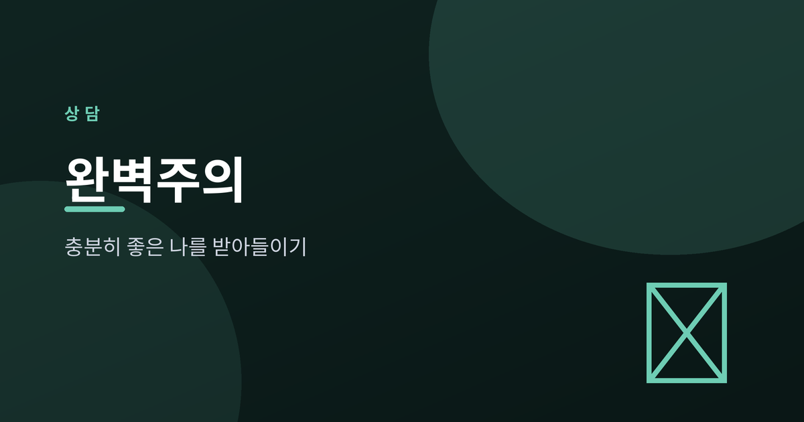
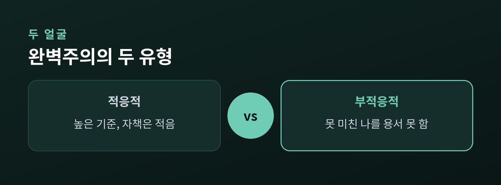
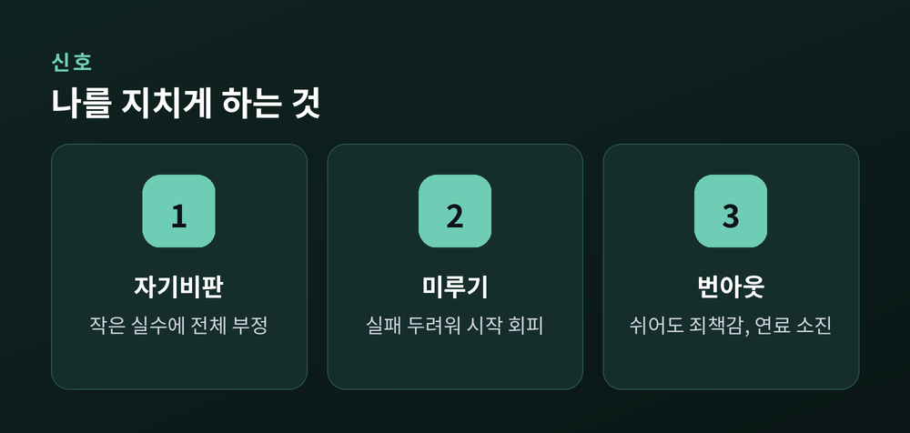
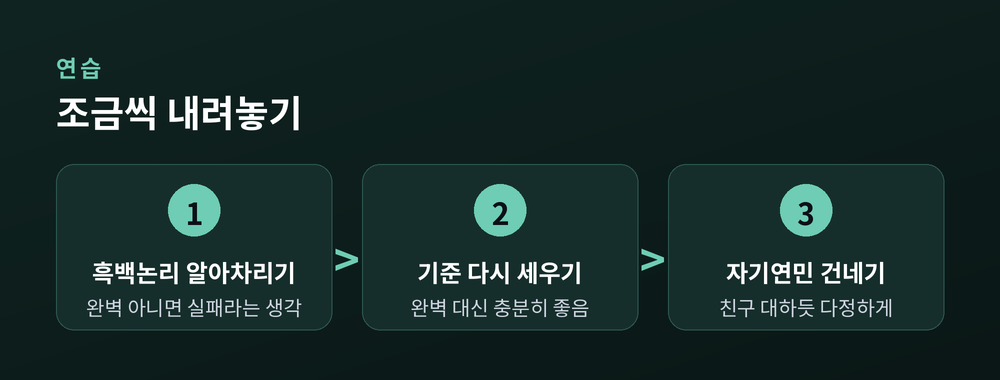

'충분히 좋은 나'를 받아들이는 연습

더 잘하고 싶은 마음은 잘못이 아닙니다. 다만 그 마음이 나를 몰아세우기 시작하면 이야기가 달라집니다. 오늘은 완벽주의를 조금 내려놓고 '충분히 좋은 나'를 받아들이는 연습을 함께 살펴보겠습니다.
완벽주의라고 다 같은 완벽주의는 아닙니다. 심리학에서는 크게 두 가지로 나눕니다. 하나는 적응적 완벽주의입니다. 높은 기준을 세우되, 결과가 기대에 못 미쳐도 자신을 크게 깎아내리지 않습니다. 기준은 동기가 되고, 성취는 만족으로 돌아옵니다.
다른 하나는 부적응적 완벽주의입니다. 기준은 높은데, 그 기준을 못 채운 자신을 용서하지 못합니다. "이 정도로는 부족해"라는 목소리가 늘 따라다닙니다. 문제는 기준의 높이가 아니라, 못 미쳤을 때 자신을 대하는 태도에 있습니다.
같은 노력을 해도 마음의 결과는 전혀 다릅니다. 한쪽은 뿌듯함으로, 다른 한쪽은 자책으로 남습니다.

부적응적 완벽주의는 조용히, 그러나 집요하게 우리를 괴롭힙니다. 첫째, 자기비판입니다. 작은 실수 하나에도 "역시 난 안 돼"라며 전체를 부정합니다. 둘째, 뜻밖에도 미루기입니다. 완벽하게 해내야 한다는 부담이 크면, 아예 시작을 못 하게 됩니다. 실패가 두려워 회피하는 것입니다.
셋째, 번아웃입니다. 100점이 아니면 의미가 없다고 여기면, 쉬는 순간조차 죄책감이 됩니다. 몸과 마음의 연료는 결국 바닥납니다.
예전엔 높은 기준이 나를 끌어올린다고 믿었습니다. 지금은 압니다. 나를 끌어올리는 건 기준이 아니라, 넘어져도 다시 서는 회복력이라는 것을요.

방법이 없는 건 아닙니다. 우선 인지행동적 접근이 있습니다. "완벽하지 않으면 실패"라는 흑백논리를 알아차리고, "충분히 잘했다"는 회색지대를 인정하는 연습입니다. 기준을 '완벽'이 아니라 '충분히 좋음'으로 다시 세워봅니다.
여기에 자기연민을 더합니다. 실수한 나에게, 소중한 친구를 대하듯 말을 건네는 것입니다. "그럴 수 있어, 누구나 그래." 자기비판이 채찍이라면, 자기연민은 다시 걸을 힘을 주는 손입니다.
물론 하루아침에 바뀌지는 않습니다. 오래된 습관은 천천히 무뎌집니다. 그래도 방향만 잡으면 됩니다.

완벽하지 않아도, 당신은 이미 충분히 좋은 사람입니다. 완벽을 향한 질주를 잠시 멈추고, 오늘의 나에게 조금 더 다정해지는 것부터 시작해보세요. 다만 자기비판과 무기력이 오래 지속되어 일상이 힘들다면, 혼자 견디지 마시고 전문 상담가·정신건강 전문가의 도움을 받으시길 권합니다.